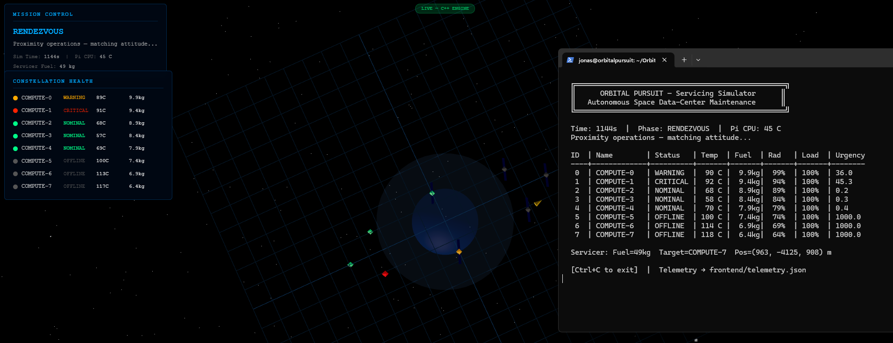
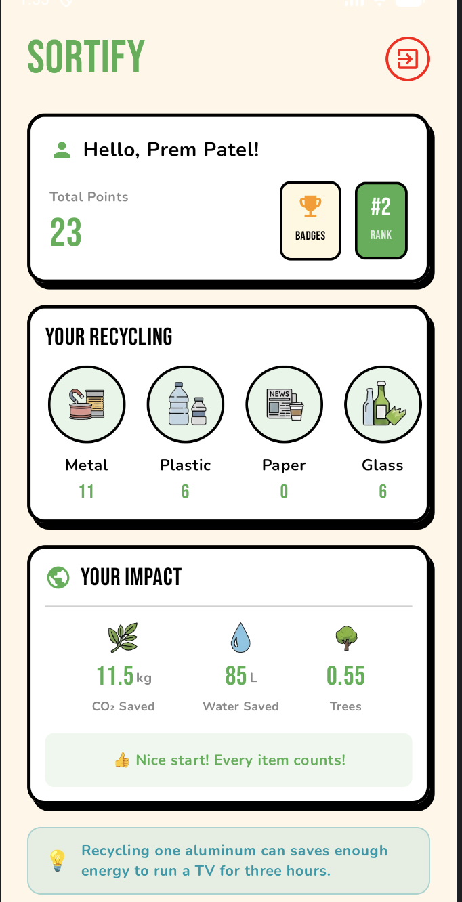
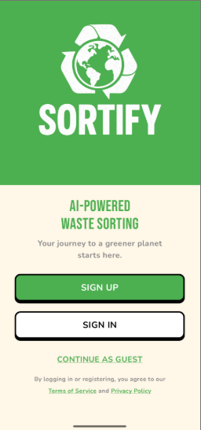
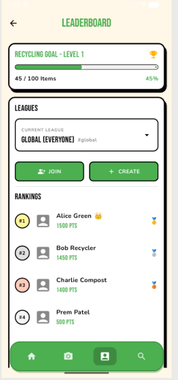
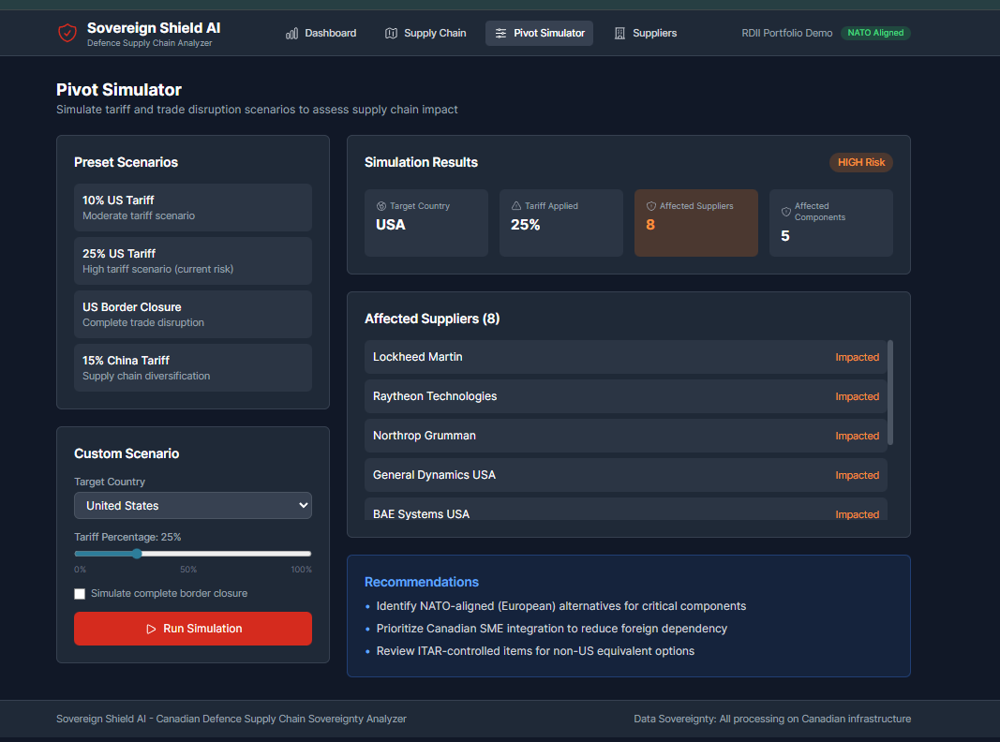

About
I am a 4th-year Software Engineering student at Carleton University, experienced in Python, Java, C++ systems, cloud infrastructure, and applied AI.
I am passionate about solving complex, domain-specific challenges across diverse defence, finance and technology sectors. I thrive on building responsive, scalable architecture whether that involves engineering autonomous simulation models, developing tooling for development, or provisioning secure infrastructure.
Selected Projects
-
OrbitalPursuit C++ / Satellites / 3D Math
A real-time autonomous spacecraft simulation engine engineered in C++17, optimized to run on resource-constrained hardware (Raspberry Pi Zero 2 W). Implements complex mathematical models including Clohessy-Wiltshire relative orbital mechanics, quaternion-based attitude control, and a custom Stefan-Boltzmann thermal simulation, visualized through an interactive Three.js frontend.
 -
Planetary Robotics Mission Control Dashboard C++ / Qt / Telemetry
Architected a cross-platform Mission Control dashboard using C++ and the Qt Framework for deployment in simulated rover missions. Developed a highly responsive graphical user interface to parse, process, and visualize real-time hardware telemetry and 3D data streams via low-latency network communication protocols.
-
Sortify — Edge AI Classification Computer Vision / Mobile
An Engineering Capstone project featuring a high-performance, on-device Computer Vision pipeline. Deploys quantized PyTorch object detection models (YOLOv8m) optimized for real-time inference latency. Backed by a hybrid cloud architecture using Google Firebase and AWS Cognito enabling a scalable user experience.
   -
Sovereign Shield Java / Neo4j / LLMs
A graph-based supplier risk model using Neo4j to analyze multi-tier dependency relationships in the defense supply chain. Integrates a locally hosted LLM pipeline (LangChain4j + Ollama) to securely parse classified supplier documents with zero external data transfer, visualized via a React-based scenario simulator.
 -
DroneGuard Python / Java / Docker
A modular, real-time acoustic threat detection pipeline for Class 1 UAS drones built for the Ottawa Defence Hackathon. Containerized with Docker and features automated GitHub Actions CI/CD pipelines, improving cross-platform portability and rapid deployment to AWS environments.
-
Project Forge Terraform / Kubernetes / AWS
A production-ready cloud infrastructure framework designed to provision secure AWS network architectures and Kubernetes (EKS) clusters. Automates the deployment of complex networking, containerized microservices, and centralized logging using infrastructure-as-code.